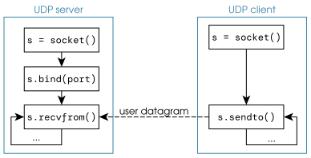
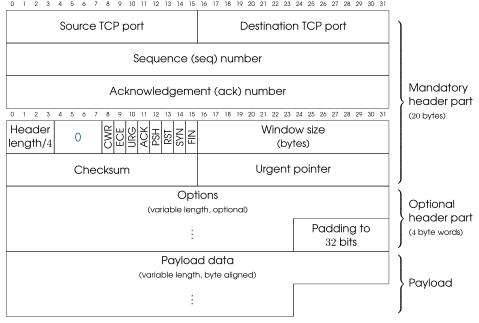
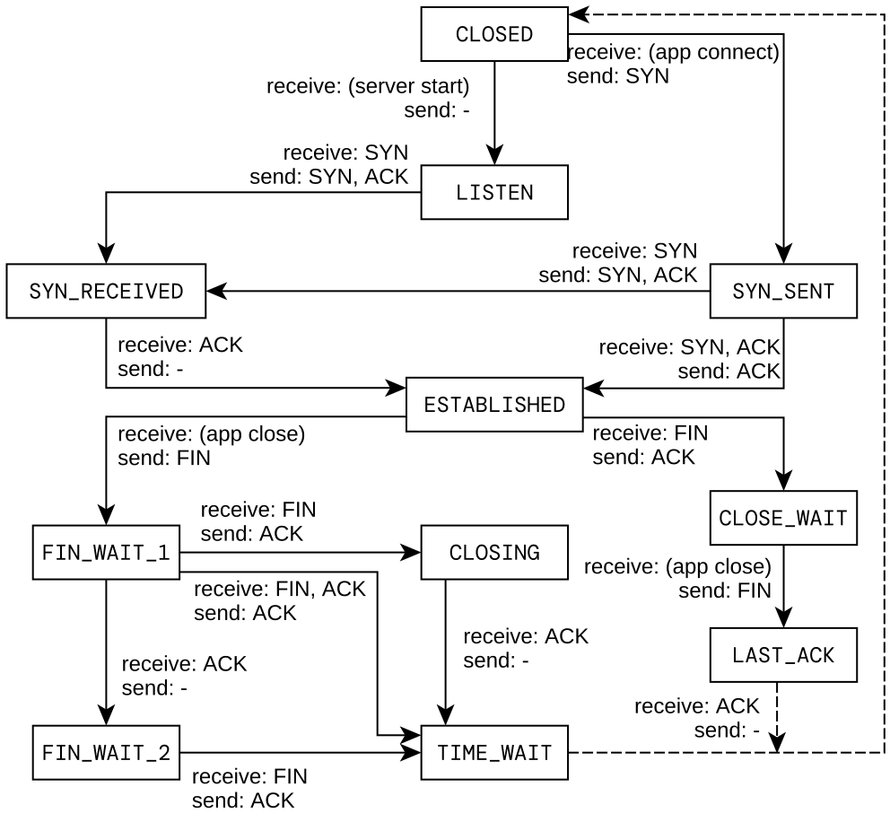

[9] Capa 4: Transport¶

Capacitats¶
La capa de Transport comunica processos (programes) que s’executen en hosts (equips connectats a la xarxa) potencialment diferents. Aquests processos s’identifiquen mitjançant adreces de capa 4 anomenades ports.
La capa de transport ofereix dues maneres diferents de comunicar-se: sense connexions (UDP, orientada a missatges) i amb connexions (TCP, orientada a flux).
UDP no estableix cap connexió amb el host de destinació perquè la prioritat és enviar unes dades de payload (càrrega útil) tan ràpid com sigui possible. En canvi, UDP envia paquets anomenats datagrames d’usuari directament a la destinació, sense esperar cap mena de confirmació de recepció per part de la capa UDP de la destinació. Les capçaleres UDP són simples i petites, i també mantenen petita la sobrecàrrega d’aquest protocol.
TCP estableix una connexió abans d’enviar cap dada de payload per assegurar-se que tots dos extrems estan preparats. A més, TCP espera la confirmació (ACK) de cada byte de dades de payload. Si no n’hi ha, les dades es retransmeten després d’un període d’espera, cosa que dona fiabilitat a TCP. TCP també fa servir una manera molt enginyosa de limitar la velocitat d’intercanvi de dades (control de flux) perquè ordinadors ràpids i lents puguin coexistir i comunicar-se amb TCP/IP. Per oferir totes aquestes funcionalitats, TCP és un protocol més complex que UDP, fa servir capçaleres més grans i introdueix una sobrecàrrega més gran.
Exercici 9.1
Quines de les aplicacions següents creus que fan servir UDP i quines TCP?
-
Jocs multijugador
-
La WWW
-
BitTorrent
-
Reproducció de vídeo en temps real (streaming)
Protocols¶

La capa de transport és a la part superior de la pila que proporciona el sistema operatiu. Pràcticament totes les aplicacions, i per tant els seus protocols de comunicació, fan servir TCP, UDP (o fins i tot tots dos) per intercanviar dades per la xarxa. A la figura anterior es mostren alguns protocols importants que fan servir TCP o UDP.
Tant TCP com UDP encapsulen les seves PDU en datagrames IP. Generalment es fa servir IPv4, però IPv6 també és una possibilitat quan està disponible.
Nota
Ni TCP ni UDP canvien de cap manera quan es fa servir IPv6 en lloc d’IPv4, és a dir, no hi ha cap protocol TCPv6. En canvi, tcp6 i altres expressions que inclouen TCP i 6 es refereixen a TCP (normal) sobre IPv6.
[9.1] Adreçament de la capa 4¶
Les “adreces” de TCP i UDP s’anomenen ports i són enters sense signe de \(16\) bits. Per als humans, els ports s’expressen principalment de dues maneres:
-
Com a número, p. ex., 22, 80 o 443.
-
Com el nom del servei que habitualment fa servir aquest port, p. ex., sshd, http, https.
Quan es rep una PDU de capa 4, el sistema operatiu fa servir el port de la seva capçalera per saber quin dels processos en execució ha de rebre les dades. Al seu torn, els processos s’han de fer bind a un port TCP o a un port TCP (o a tots dos) per indicar al sistema operatiu de quin port esperen rebre dades.
Només un procés alhora es pot vincular a un port per enviar dades, però els ports TCP i UDP es tracten de manera independent:
-
Si un procés està vinculat al port
TCP/100, no rebrà el trànsit UDP adreçat al port 100. -
Si un procés està vinculat al port
TCP/100, un altre procés (o fins i tot el mateix) es pot vincular aUDP/100.
El port número 0 està reservat, de manera que el rang de ports utilitzable és 1–65535. Els ports 1–1023 només es vinculen a processos amb privilegis (p. ex., un servidor http), mentre que les aplicacions client (p. ex., un client http) només es poden vincular als ports 1024–65535 segons la seva disponibilitat.
Exercici 9.2
Quants servidors diferents es poden executar en una màquina per oferir alguna funcionalitat a altres hosts de la xarxa?
[9.2] UDP – User Datagram Protocol¶
[9.2.1] Format dels paquets¶
Tots els datagrames d’usuari que fa servir UDP tenen una capçalera d’exactament \(8\) bytes i l’estructura següent:
Exercici 9.3
-
Quina és la mida màxima de payload que es pot enviar en un únic datagrama d’usuari?
-
És desitjable la fragmentació quan es fa servir UDP?
[9.2.2] Funcionament¶

Els clients UDP primer creen un socket (punt de connexió) i després envien directament els datagrames d’usuari amb sendto. No cal establir ni tancar cap connexió.
Els servidors UDP primer s’han de fer bind al port que volen exposar als clients, i després reben cada datagrama en una crida individual a la funció de lectura (recvfrom).
La funció bind és purament interna al servidor: implica canvis en la seva configuració (la taula que associa números de port i processos), però no genera cap missatge.
Exercici 9.4
-
Pot funcionar un servidor UDP sense enviar cap dada per la xarxa?
-
Pot un client rebre trànsit UDP sense vincular-se a un port?
-
Poden dos hosts diferents vincular-se al mateix port i tot i així intercanviar datagrames d’usuari?
Exercici 9.5
El fragment de codi següent mostra l’esquelet bàsic d’un servidor UDP:
snippets/udpserver.py
import socket
port = 4567
s = socket.socket(family=socket.AF_INET, type=socket.SOCK_DGRAM)
s.bind(('', port))
while True:
user_datagram = s.recvfrom(1024)
print(f"Received UDP on {port=}: {user_datagram!r}")
-
Executa el servidor i, en un altre terminal, executa
ncat -u localhost 4567i escriu una mica de text per provar el servidor. -
Implementa l’extrem client de la comunicació i prova’l amb el servidor.
-
Quina informació important obtens si canvies
s.recvfrompers.recvmsg?
Nota
Aquest codi fa servir sockets UDP normals, de manera que no necessita permisos d’administrador ni la capacitat CAP_NET_RAW, com passava a l’exercici 7.4, que en canvi requeria accés a sockets de capa 2 (p. ex., Ethernet).
[9.3] TCP – Transport Control Protocol¶
[9.3.1] Format dels paquets¶
Les PDU de TCP s’anomenen segments. La seva capçalera fa com a mínim \(20\) bytes, però pot ser més llarga quan es fan servir certes opcions:

Les capçaleres TCP contenen vuit flags d’\(1\) bit. D’aquests, quatre es fan servir per a funcionalitats bàsiques de TCP que es tracten a les seccions següents. En l’ordre en què apareixen:
-
Flag ACK (confirmació) – “el meu número ack és vàlid”
-
Flag RST (reset) – “avorta la connexió”
-
Flag SYN (sincronització) – “obro el meu extrem de la connexió”
-
Flag FIN (finalització) – “no enviaré més dades de payload”
Exercici 9.6
Com pot saber l’extrem receptor la mida de les opcions i de les dades de payload?
[9.3.2] Funcionament¶
TCP és un protocol stateful (amb estat). Els sockets TCP passen per diversos estats durant la comunicació. Cada extrem de la comunicació té el seu propi socket amb el seu propi estat. A grans trets, les connexions es poden classificar com a “Connectant”, “Connexió establerta” o “Tancant la connexió”. Les dades de payload només s’han d’intercanviar mentre s’està a “Connexió establerta”.

Els sockets TCP poden estar en un d’\(11\) estats. Aquests estats, juntament amb dos comptadors de \(16\) bits (número d’ACK (#ack) i número de seqüència (#seq)) permeten la fiabilitat de la comunicació que s’espera de TCP. El significat d’aquests estats i de les seves transicions s’explica als capítols següents.
[9.4] TCP: “Connectant”¶

Quan es crea un socket, comença a l’estat CLOSED. L’extrem que actua com a servidor comença a escoltar al port configurat per al servei i passa a l’estat LISTEN. En aquest estat no s’intercanvia payload.
Una connexió s’estableix mitjançant un 3-way handshake fent servir els flags de capçalera SYN i ACK. Gràcies a aquest handshake, cada extrem de la comunicació arriba a l’estat ESTABLISHED en un moment diferent. Un cop hi arriben, estan preparats per intercanviar dades de payload.
Nota
A TCP, tots dos extrems es comuniquen com a peers (parells) en igualtat de condicions: no importa qui ha iniciat la comunicació. Dit això, normalment un extrem fa una “obertura activa” (el client) i l’altre una “obertura passiva” (el servidor).
Cada extrem de la comunicació porta el compte dels seus comptadors de número d’ACK (#ack) i de número de seqüència (#seq). El valor de #seq el tria cada extrem per separat (i normalment a l’atzar): \(A,\,B \in [0, 2^{32} - 1]\).
Durant l’obertura de la connexió, cada extrem envia exactament un segment amb el flag SYN activat. Aquests segments intercanvien (sincronitzen) els seus números de seqüència inicials \(A\) i \(B\).
Els segments amb el flag ACK activat (tots excepte el primer segment del client) tenen el #ack fixat a “el següent #seq que s’espera de l’altre extrem”. Aquest #ack s’ha de llegir com “he rebut correctament tots els segments corresponents fins a #ack, sense incloure’l”.
Els números #ack i #seq esperats durant el 3-way handshake són:

Exercici 9.7
-
Com pot saber un extrem que l’altre extrem ha rebut el #seq que ha triat?
-
Per què el tercer segment té el #seq fixat a \(A+1\) i no a \(A\)?
-
Quin #seq tindrà el següent segment que enviï el servidor?
[9.5] TCP: “Connexió establerta”¶
[9.5.1] Fluxos i números de seqüència¶
TCP ofereix la il·lusió d’un flux de dades: dos conductes de dades en les direccions d’entrada i de sortida (una connexió full-duplex). Aquests conductes són fiables, és a dir, s’hi apliquen mecanismes per evitar la pèrdua, la duplicació i la reordenació de dades.

A cada byte de dades de payload se li assigna un número de seqüència (#seq) a la capçalera TCP. El primer byte de dades de payload té #seq \(=A+1\), on \(A\) és el número de seqüència inicial establert durant l’obertura de la connexió (vegeu la secció 9.4). A cada nou byte de dades se li assigna el #seq següent (sense salts).
Exercici 9.8
El #seq que ve després de \(2^{32} - 1\) és \(0\). Per què?
A TCP, les dades de payload s’envien sempre juntament amb la primera posició que ocupen dins del flux i la seva longitud. Per exemple, a partir de les dades que es mostren més amunt, es podrien generar dos segments:
-
#seq \(= A+1\), len \(= 4\), dades \(=\)
0x48 69 21 0a('Hi!\n') -
#seq \(= A+5\), len \(= 13\), dades \(=\)
0x48 6f 77 20 61 72 65 20 79 6f 75 3f 0a
Exercici 9.9
Quin seria el #seq del següent segment amb dades de payload noves?
L’extrem receptor d’un segment TCP fa servir aquesta informació per recompondre una còpia de les dades en l’ordre correcte, fins i tot si els segments arriben desordenats. Aquestes dades es passen a la capa superior a través d’un buffer (memòria intermèdia).

[9.5.2] Fiabilitat i retransmissió¶
TCP necessita que l’altre extrem confirmi amb un ACK totes les dades transmeses. Cada vegada que es reben dades en un segment TCP, l’extrem receptor envia una confirmació encara que en aquell moment no hagi d’enviar cap dada. El número d’ACK (#ack) de la capçalera TCP serveix per indicar a l’altre extrem que s’han rebut totes les dades fins a #ack (sense incloure’l).

Nota
El camp #seq d’una capçalera TCP fa referència als números de seqüència de l’emissor. El camp #ack fa referència als números de seqüència del receptor.
Les dades de payload s’inclouen a les confirmacions TCP sempre que n’hi hagi de disponibles. Recíprocament, el valor més recent de #ack s’inclou sempre que s’envien dades, és a dir, les confirmacions fan piggyback (viatgen a cavall) de les dades de payload.
Per exemple, si l’Alice envia una petició de \(25\) bytes, en Bob pot enviar la seva resposta de \(10\) bytes i la confirmació de les dades de l’Alice en el mateix segment TCP. L’Alice ha de confirmar les dades d’en Bob i, si cal, aviat envia un segment sense dades. L’Alice tornarà a enviar dades més endavant quan calgui.

Un segment TCP que no es confirma després d’un cert període d’espera es retransmet. Aquest temps el decideix el sistema operatiu de cada extrem a partir del temps mitjà que es triga a enviar un segment i rebre’n una resposta (el temps d’anada i tornada, RTT).
Les confirmacions s’envien encara que siguin idèntiques a una d’anterior. Això és perquè les confirmacions també es poden perdre.

Exercici 9.10
Suposant que tots dos extrems segueixen TCP correctament:
-
Proporciona un conjunt de valors vàlids per a (a) fins a (i).
-
Com canvia la història si (f) i (h) són idèntics/diferents?

[9.5.3] Control de flux¶
Les dades per transmetre sovint es produeixen a ràfegues. Voldríem enviar-ne tantes com fos possible tan aviat com fos possible, però TCP hi imposa dos límits.
El primer límit, la mida màxima de segment (MSS), és la quantitat màxima de dades de payload per segment permesa en una connexió TCP.

La raó d’aquest límit és evitar la fragmentació per motius de rendiment, p. ex., a causa de l’elevat cost en temps i memòria del reassemblatge.
Per defecte, la MSS és de \(536\) bytes a IPv4, però es pot negociar amb les opcions de la capçalera TCP durant la fase d’obertura de la connexió. A IPv6, la MSS per defecte és de \(1220\) bytes.
Exercici 9.11
Ethernet té una MTU de \(1500\) bytes. Suposant que els datagrames només travessen 2 xarxes Ethernet:
-
Quina és la MSS més gran que no pot causar fragmentació, MSS\(_\textrm{max}\)?
-
Quina és la sobrecàrrega per a MSS\(_\textrm{max}\) i per a MSS\(_\textrm{max}\) + 1?
El segon límit afecta la quantitat màxima de dades de payload que es poden enviar abans que l’altre extrem respongui amb un nou #ack: l’anomenada mida de la finestra de transmissió. Un host no enviarà dades (per moltes que n’hi hagi de disponibles, o per urgents que siguin) fins que no arribin aquests #ack. Quan l’ordinador més lent respon, ho fa sempre amb el #ack més recent.
Exercici 9.12
Quines són les mides de MSS i de finestra de transmissió més probables en aquest exemple?

El valor de la finestra de transmissió s’anuncia amb tots i cadascun dels segments TCP: aquest valor és un camp obligatori de les capçaleres TCP. A mesura que la connexió avança, cada host pot canviar el valor que anuncia segons la seva pròpia càrrega i necessitats.
Nota
Cada host anuncia la seva pròpia mida de finestra.
Aquest límit serveix per evitar que els ordinadors ràpids saturin els més lents (o sobrecarregats): sense el límit, l’ordinador més lent podria necessitar un buffer de mida infinitament creixent per emmagatzemar els segments encara no processats enviats per l’ordinador més ràpid. Amb aquest límit, en el punt de saturació, tots dos extrems envien segments al mateix ritme encara que triguin temps molt diferents a produir-los i processar-los.
[9.6] TCP: “Tancant la connexió”¶
[9.6.1] FIN, #seq i #ack¶
Un cop la connexió és ESTABLISHED, s’hi manté fins que un dels dos extrems decideix tancar-la.
Un node anuncia que ha acabat d’enviar dades i que vol tancar la connexió enviant un segment amb el flag FIN activat a la capçalera. L’altre extrem pot continuar enviant dades, i en aquest cas espera respostes amb valors de #ack actualitzats. L’altre extrem també pot optar per tancar la connexió tan bon punt veu el primer FIN. En tots dos casos, si s’envien \(k\) bytes de dades i \(A\) és el #seq inicial, s’espera un segment amb #ack \(= A+k+2\).
Fixa’t que el flag FIN ocupa ell mateix un número de seqüència i s’ha de confirmar com el SYN (vegeu la secció 9.4), p. ex.:
[9.6.2] Tancament bilateral¶
Després que un extrem tanqui el seu costat de la connexió, l’altre pot continuar enviant dades indefinidament. Quan el segon costat acaba d’enviar dades, també envia un segment amb el flag FIN activat.

Fixa’t que, si l’altre extrem vol acabar la connexió en rebre un segment FIN, el procés de tancament es condensa en \(3\) segments en lloc de \(4\), p. ex.,

Nota
Fixa’t que:
-
Cada extrem envia només un segment amb el flag FIN, excepte en cas de retransmissió.
-
El segment amb el flag FIN pot contenir dades de payload. En aquest cas:
-
Les dades de payload ocupen números de seqüència anteriors al del FIN.
-
L’altre extrem ha de fer ACK tant de les dades de payload com del FIN.
-
[9.6.3] Tancament unilateral¶
De vegades, cal acabar les connexions i no hi ha prou temps o interès per passar pel procés de tancament bilateral de diversos passos. Aquest pot ser el cas, p. ex., quan un procés falla, quan es bloqueja un port TCP o UDP determinat, i en altres situacions d’error.
En aquest escenari, el host que ha detectat la situació anòmala simplement envia un segment amb el flag RST (reset) activat. Els extrems receptors no han de confirmar el RST; en canvi, els recursos de la connexió s’alliberen directament, p. ex.,

Seguir el procediment de tancament bilateral o unilateral de la connexió ajuda a reduir els recursos de càlcul necessaris per mantenir les piles de xarxa de milers de milions de dispositius arreu del món.
Nota
Una connexió no es pot reobrir després de tancar-se. El flag RST s’hauria pogut anomenar amb més precisió “terminació forçada”.
Exercici 9.13
El diagrama següent mostra els \(11\) estats de TCP i (gairebé) totes les transicions d’estat possibles.

-
Indica el cicle de vida del socket d’un servidor HTTP com un camí al graf.
-
Indica el cicle de vida del socket del client HTTP corresponent com un camí al graf.
-
L’estat
CLOSINGno es descriu a les seccions anteriors. Quina creus que n’és la finalitat?
Nota
Aquest diagrama està adaptat de “TCP/IP Illustrated, Volume 2: The Implementation,” de Gary R. Wright i W. Richard Stevens.